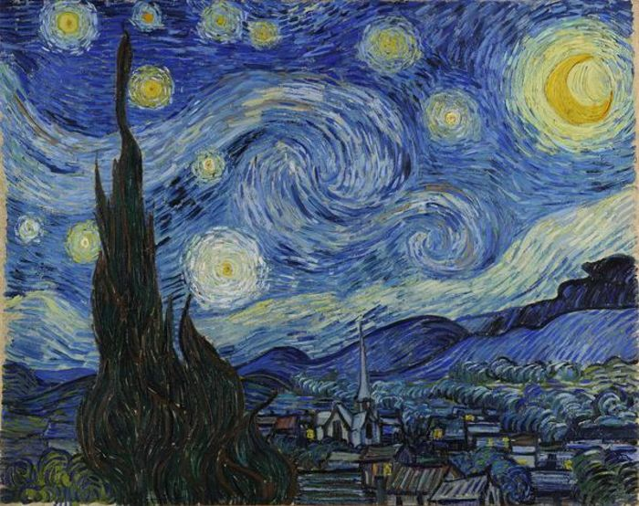
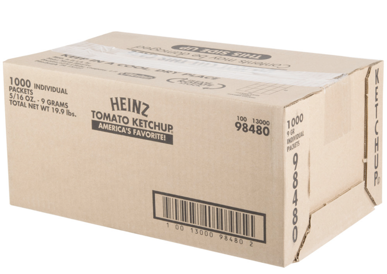
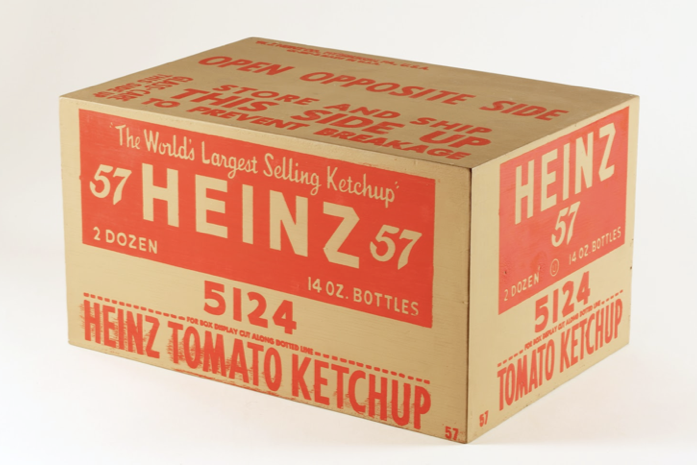
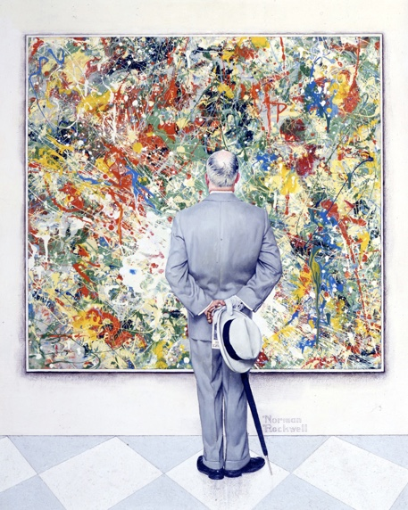
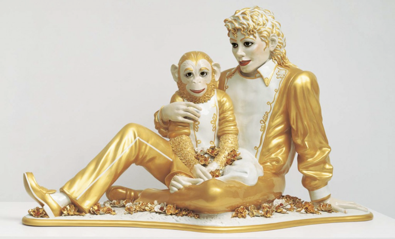

September 11, 2018
Where does the meaning and/or value of an image lie?
Is it intrinsic or inherent to the image itself?

Does it come from the creator’s intention?
Codes“John ate an octopus.” ≠ “An octopus ate John.”
Discuss: How do the paradigmatic and syntagmatic axes relate to an advertising campaign? To culture jamming?
Kundel HL, Nodine CF. “A visual concept shapes image perception.” Radiology 1983; 146:363–368.

Andy Warhol, Heinz Ketchup, 1964

Taste as “cultivated”

Norman Rockwell
“The Connoisseur,” 1961.
Pierre Bourdieu
Distinction: A Social Critique of the Judgement of Taste (1979 / 1984).
explores relationship between class and taste
and between economic class and social capital
According to Bourdieu, judgements of taste express a class-based habitus, and are one of the defining elements of social identity.
“Nothing more clearly affirms one’s ‘class’, nothing more infallibly classifies, than tastes in music…there is no more ‘classificatory’ practice than concert-going, or playing a ‘noble’ instrument.”
(Bourdieu, 1979, Distinction, p. 18).
Hand Painted Porcelain, 1950s
$60 on Etsy

Michael Jackson and Bubbles
Jeff Koons, Banality series, 1988